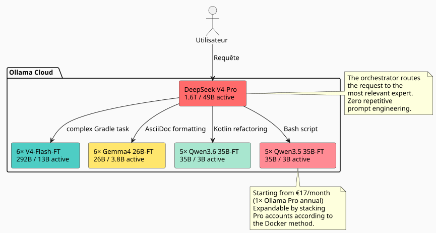
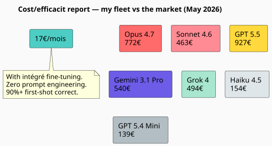
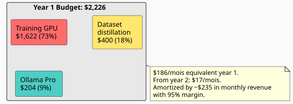

27× to 45× more effective than Claude and GPT: how a fleet of 23 AI fine‑tuned experts crushes the market
Published on 11 May 2026
- The problem: why fine-tune and not RAG?
- The idea: a fleet of experts, not a single model
- The codebase under the microscope: 7,900 files, 144,000 lines
- Estimated training time: 811 H100-heures
- The painful comparison: Claude, GPT, Gemini, Grok vs my fleet
- Efficiency factor: 5‑8× vs using V4-Pro alone
- The complete budget: a one-shot investment, a ridiculous package
- The limits of the exercise
- Conclusion: fine‑tuning has become an accessible luxury.
- Fleet fine-tuned models
- Resources
When using an LLM for everyday software development, you always end up hitting the same wall: the model doesn’t know your codebase. It doesn’t know that you use such pattern ofhttps://fr.wikipedia.org/wiki/Graphe_orient%C3%A9_acyclique[DAG], such a Gradle convention, such an epistemological stratification in yourhttps://fr.wikipedia.org/wiki/AsciiDoc[.adoc]. Then we inject context into it, we repeat, we correct, we iterate. And time — and money — pass.
So I bluntly asked: how much would a team of fine‑tuned models on my workspace cost, capable of spitting out code in my style without needing to explain it to them each time? And most importantly: how does this approach compare to classic proprietary solutions — Claude, GPT, Gemini, Grok?
The response surprised me. Much less than I had imagined. And the cost‑effectiveness ratio against the sector giants is outrageous. Here is the full detail.
The problem: why fine-tune and not RAG?
RAG is good. My knowledge graph and my epistemic compartmentalization work. But RAG has a fundamental flaw: for each query, you must re-inject the relevant context. Your prompt gets longer, your latency explodes, and the model never internalizes your patterns — it reads them each time as an external document.
Fine-tuning is muscle memory. The model knows that you are writing.build.gradle.kts`with tasks recorded via`tasks.register, that your`AGENTS.adoc`follow a standardized syntax, that your workspace is structured into boroughs. He doesn’t need to be reminded.
|
Fine-tuning is not a replacement for RAG. It is a complementary layer. RAG remains relevant for data that changes frequently (logs, tickets, recent commits). Fine-tuning is for long-term structural and stylistic knowledge. |
The idea: a fleet of experts, not a single model
A single model fine-tuned on all my workspace is already good. But it’s sub-optimal. My workspace covers very different domains:
-
Gradle plugins (Kotlin, convention plugins, composite builds)
-
DAG engine (Kotlin, planning, execution)
-
LLM Agents (Python, LangChain4j, RAG)
-
Architectural documentation (AsciiDoc, governance)
-
Infra/DevOps (Docker, GitHub Actions, CI/CD)
A single model should be good everywhere, excellent nowhere. The solution? Afleet of specialized models, with an orchestrator that routes each request to the right expert.

The total fleet:1 orchestrateur + 22 experts = 23 models. And the monthly inference cost?17€/monthwith an Ollama Pro annual subscription — extensible by accumulating accounts if quotas are exceeded, as demonstrated in ma méthode Docker multi-comptes. We start at 17€, we add 20€ per tier according to actual need. No waste.
The codebase under the microscope: 7,900 files, 144,000 lines
Before estimating the cost of training, you need to know what to train. I audited my workspace, rigorously excluding everything ignored by Git:
----
----
----
----
----
build/ out/ node_modules/ runtimes/ .gradle/ dist/
target/ venv/ __pycache__/ .cache/ .tox/
----
Here is the result for tracked files only:
[cols="2,2"]
|===
|Metric |Value
|Tracked source files |**7,896** |Lines of code (LOC) |**143 805** |Git repositories |**26** |Main languages |Kotlin (1,903), AsciiDoc (2,765), Python (5,029)
|===
[IMPORTANT]
====
These 5,000+ Python files include the`runtimes/`some notebooks and utility scripts. The application core (Gradle plugins, DAG engine, agents) is mainly in Kotlin and AsciiDoc.
====
From this mass, I estimate I can generate a synthetic dataset of**~170 million tokens**via an instructor LLM (distillation of the codebase into instruction/response pairs).
=== Dataset detail by expert type
[source,text]
----
Dataset maître (généraliste V4-Flash) : 50M tokens
Expert Gradle/Build : 15M tokens
Expert Kotlin/DAG : 15M tokens
Expert AsciiDoc/Gouvernance: 15M tokens
Expert Agent/LLM/Python : 15M tokens
Expert Infra/CI-CD : 15M tokens
Micro-experts Qwen/Gemma : ~5M tokens chacun
----
== Model selection: 100% MoE, zero dense
That's where architecture becomes truly efficient.
A *dense* model activates all its weights for each token. A *MoE* (Mixture of Experts) model activates only a fraction of its parameters. The inference cost — and fine-tuning cost — is proportional to the parameters.**activated**, not to the parameters**stored**.
Let's see what the market offers in MoE today on Ollama Cloud:
[cols="3,2,2,1,3"]
|===
|Model |Total params |Activated |Activation |Ollama Cloud
|DeepSeek V4-Pro |1.6T |49B |3.1% |✅ native |DeepSeek V4-Flash |292B |13B |4.5% |�✅ native |Gemma 4 26B-A4B |26B |3.8B |14.6% |�✅ native |Qwen3.6-35B-A3B |35B |3B |8.6% |(not yet integrated) |Qwen3.5-35B-A3B |35B |3B |8.6% |�✅ native
|�❌ Qwen3.5-27B |27B |27B |100% dense |eliminated |�❌ Qwen3.5-4B/9B |4B/9B |4B/9B |100% dense |eliminated |�❌ Gemma 4 31B |31B |31B |100% dense |eliminated
|�🧪 Gemma 4 E2B/E4B |5B/8B |5B/8B |100% dense |validation pipeline
|===
[CAUTION]
====
The activation ratio is the discriminating criterion. A Gemma 4 26B-A4B activates only 3.8B of its 26B parameters — that's 7× less than a dense 27B, for comparable coding agent performance (77.1% vs 80% on LiveCodeBench v6).
====
=== Why I am abandoning dense models
The exception: the Gemma 4 E2B and E4B. These two models, under Apache 2.0, are perfect for testing and validating a training pipeline at low cost. A 2‑3 hour run on an E2B costs less than $5 — if the dataset or hyperparameters are messed up, you know it for a handful of dollars. Once the pipeline is tuned, they can even be used for ultra‑micro tasks (trivial reformatting, binary classification). But for the main fleet experts, I stick with MoE. Here's why:
.But not only that: the Gemma 4 E2B/E4B, experts of fine anonymization
[NOTE]
====
Google designed these small models to be competitive in native tool calling — they know how to call functions, manipulate regexes, search for patterns. Once fine-tuned on anonymization examples (emails, tokens, UUIDs, file paths), they become**dataset anonymizers**ultra-fast. We give them a block of raw text, they call`sed`(Empty)`regex`via a tool call and return the cleaned block. The inference cost is negligible: 5B activated, it fits on a single entry-level GPU. These models are not domain experts — they are**specialized workers**in the production chain of the dataset
====
* Its training VRAM (even in QLoRA) is proportional to the**27B totals**
* His/her training time is proportional to the**27B activated**
Let's compare with a Qwen3.6-35B-A3B (MoE):
[cols="3,2,2,2"]
|===
| |Qwen3.5-27B (dense) |Qwen3.6-35B-A3B (MoE) |Ratio
|VRAM QLoRA |~55 GB |~35 GB |1.6× |GPU-hours (8M tokens) |~12h |~4h |**3×** |Cost per fine-tune |~$24 |~$8 |**3×** |SWE-bench Verified |75.0% |73.4% |comparable
|===
The MoE costs 3× less to train for agent-coding performance within 5%. Across 22 experts, the gap amounts to thousands of euros.
== Training estimate: 811 H100-hours
I broke down the training cost per model, in QLoRA 4-bit, with the datasets described above.
=== Lightweight MoE micro-experts (3-3.8B activated)
These models require 1 H100 (80 GB) per run. The model VRAM in Q4 is about 13-18 GB, leaving ample room for LoRA optimizer states and activations.
[cols="4,2,3,2"]
|===
|Model |Number of runs |GPU-h/run |Total GPU-h
|Gemma 4 26B-A4B-FT |6 |3.5 h |**21:00** |Qwen3.6-35B-A3B-FT |5 |4.0 h |**20 h** |Qwen3.5-35B-A3B-FT |5 |4.0 h |**20 hours** |*Micro subtotal* | | |*61 h*
|===
=== Executives V4-Flash (13B activated / 292B stored)
The DeepSeek V4-Flash is a special case. Even though only 13B are activated per token, the full model in Q4 weighs ~142 GB — all experts must be in VRAM during training. It is therefore**3× H100**by run to be comfortable
[cols="4,2,3,3,2"]
|===
|Model |Dataset |GPUs |Hours |Total GPU-h
|V4-Flash-Base general |50M tok |3× H100 |50 h |**150 hours** |V4-Flash expert ×5 |15M tok |3× H100 |40 h |**600 h** |*Executive subtotal* | | | |*750 h*
|===
[cols="3,2,1"]
|===
|**TOTAL** | |**811 H100-h**
|===
[NOTE]
====
For comparison, a full fine-tune of V4-Flash (without QLoRA, all weights) would cost ~4,000 H100-hours just for the 6 models. QLoRA reduces the cost by a factor of 5. It's the only way to make the project economically viable at this scale.
====
=== GPU rates: who is renting what in May 2026
I benchmarked the main H100 renters. The metered price, for 811 hours.
[cols="3,2,2,2"]
|===
|Lessor |$/H100·h |Total 811h |Reliability
|**Vast.ai spot** |$1.60 |**$1,298** |★★☆ interruptible |**Crusoe Cloud** |$2.00 |**$1,622** |★★★★ reliable data center |FluidStack |$1.98 |$1 606 |★★★ |TensorDock |$1.80 |$1 460 |★★☆ |RunPod |$2.29 |$1 857 |★★★ good compromise |CoreWeave |$2.25 |$1 825 |★★★★ enterprise |Lambda Labs |$2.49 |$2 019 |★★★★ premium
|===
[TIP]
====
Vast.ai spot is the cheapest but your runs can be interrupted at any time. For training, that's risky. Crusoe at $2.00/h is the best reliability/price trade-off. The extra cost of $324 versus Vast is worth the peace of mind.
====
=== Wall-clock: how long to train everything?
With a single 3× H100 node, the 31 runs (1 generalist + 30 experts) take about**12 days**sequentially. If you rent 2 nodes in parallel, it drops to**6 days**.
In practice, micro-experts can run on separate nodes (1 H100 each) while the V4-Flash occupy the 3× H100 node. With smart scheduling :
----
Nœud A (3× H100) : V4-Flash généraliste → V4-Flash experts ×5 (11 jours) Nœud B (1× H100) : Gemma 4 26B ×6 → Qwen 36 ×5 → Qwen 35 ×5 (6 jours)
7 days rental, everything folded.
== Inference: 23 models on Ollama Cloud starting at €17/month
It is the most elegant part of the architecture.
Ollama Cloud allows uploading private models (Pro plan feature). My 22 fine‑tuned models are being pushed in`.gguf`on my Ollama space, marked as private, and accessible via the standard API.
[plantuml, inference-flow, svg]
----
@startuml
skinparam backgroundColor #FAFAFA
skinparam defaultFontSize 12
|Utilisateur|
start
:Tâche de développement;
|Orkestrateur (V4-Pro)|
:Classifier la tâche\n(domaine + complexité);
if (Tâche simple,\nspécialisée ?) then (oui)
:Router vers micro-expert\n(Gemma 4 26B-A4B-FT\n ou Qwen3.6-35B-A3B-FT);
elseif (Tâche complexe,\nconventions fortes ?) then (oui)
:Router vers exécutif\n(V4-Flash-FT);
else (non)
:Résoudre avec V4-Pro\n(architecture, décision);
endif
|Modèle ciblé|
:Génère le code/output\n**dans mon style**,\n90%+ first-shot correct;
:Retourne la réponse;
stop
@enduml
----
=== we start at 17€/month, we scale if needed
The Ollama Pro plan (17€/month annual) authorizes 3 competing cloud models. In this architecture, I never need more than 2-3 experts simultaneously:
* The classification phase (V4-Pro) occupies 1 slot, a few seconds
* The targeted expert occupies 1 slot, the time to generate his/her response
* The 3rd slot remains in reserve for parallel tasks
If usage increases, I add extra Pro accounts using the Docker method described in xref:0120_cumuler_deux_abonnements_ollama_pro_docker_post.adoc[my article on stacking subscriptions]. No Max plan at €100/month — I only add what I really need.
The only limiting factor is the**GPU-time quota**Monthly Ollama (50× the free plan for Pro). For my use of a few hundred queries per day, it's plenty sufficient.
[IMPORTANT]
====
The marginal cost of a call to V4-Pro (49B activated) vs Gemma 4 26B-A4B (3.8B activated) is the**even for me: zero**. The Ollama plan absorbs the compute difference. My only indicator is latency.
====
=== Routing in practice
----
Volume de requêtes estimé : ~500/jour
├─ 50% → Gemma 4 26B-A4B-FT (micro, 3.8B actifs) │ Formatage AsciiDoc, scripts simples, conventions nommage │ ├─ 25% → V4-Flash-FT (exécutif, 13B actifs) │ Plugins Gradle, refactoring Kotlin, génération DAG │ ├─ 15% → Qwen 35B MoE-FT (micro, 3B actifs) │ Tâches intermédiaires, review de code, documentation │ └─ 10% → V4-Pro (orkestrateur, 49B actifs) Décisions architecturales, refactoring transverse, problèmes vraiment nouveaux
Most of the traffic passes through the small routes. The large model intervenes only as a last resort.
== The comparison that hurts: Claude, GPT, Gemini, Grok vs my fleet
This is where the gap becomes vertiginous. Let's see what the same workload would cost (500 requests/day, ~300 input tokens + 2,000 output tokens on average) with proprietary market solutions in May 2026.
=== Anthropic — Claude (May 2026 rates)
Anthropic recently *lowered* its prices. The pressure from open‑weight solutions like DeepSeek and Qwen is being felt.
[cols="3,2,2,2,2"]
|===
|Model |$/MTok |Output $/MTok |Cost/day |**Cost/month**
|Opus 4.7 (the + intelligent) |$5 |$25 |$25.75 |**$772** |Sonnet 4.6 (balanced) |$3 |$15 |$15.45 |**$463** |Haiku 4.5 (the fastest) |$1 |$5 |$5.15 |**$154**
|===
[CAUTION]
====
These rates are *after* Anthropic's latest price cut (May 2026). Before that, Opus was $15/$75 per MTok. The fear of open-weight is real.
====
Even the cheapest model of Claude — Haiku 4.5 to**154€/month**— costs 9 times more than my Ollama Pro subscription at 17€. And Haiku does not know my codebase, does not generate in my style, and requires systematic prompt engineering.
The smartest — Opus 4.7 — blows the budget**772€/month**for a modest volume of 500 requests per day. Either**45× more expensive**that my solution.
=== OpenAI — GPT (pricing May 2026)
[cols="3,2,2,2,2"]
|===
|Model |$/MTok |Output $/MTok |Cost per day |**Cost/month**
|GPT 5.5 (the most intelligent) |$5 |$30 |$30.90 |**$927** |GPT 5.4 (standard) |$2.50 |$15 |$15.45 |**$463** |GPT 5.4 Mini |$0.75 |$4.50 |$4.64 |**$139**
|===
Even OpenAI's "economic" model—GPT 5.4 Mini at €139/month—costs 8× my subscription, for a model that knows nothing about my conventions and requires heavy prompt engineering.
GPT 5.5, their flagship :**927€/month**. For *zero-shot* on my codebase. With 2-3 iterations per task due to uncontrolled style, the real monthly cost easily doubles.
=== Google — Gemini (prices May 2026)
[cols="3,2,2,2,2"]
|===
|Model |$/MTok |$/MTok |Cost/day |**Cost/month**
|Gemini 3.1 Pro (High) |$3.50 |$17.50 |$18.00 |**$540** |Gemini 3.1 Pro |$2 |$10 |$10.30 |**$309** |Gemini 3 Flash |$0.30 |$1.50 |$1.54 |**$46**
|===
Gemini 3 Flash at €46/month is competitive in pure price — but without fine-tuning, it generates « générique » code. Not *Cheroliv* code.
=== Grok — xAI (rates May 2026)
[cols="3,2,2,2,2"]
|===
|Model |$/MTok |$/MTok |Cost/day |**Cost/month**
|Grok 4 |$4 |$16 |$16.48 |**$494** |Grok 4 Mini |$0.80 |$3.20 |$3.30 |**$99**
|===
=== Microsoft — Azure OpenAI (pricing May 2026)
Azure applies the same prices as the direct OpenAI API, but also charges for infrastructure and network. You need to account for an additional cost of 10-20% for the managed service.
[cols="3,2,2,2,2"]
|===
|Model |$/MTok |$/MTok |Cost/day |**Cost/month**
|GPT 5.4 (Azure, Global) |$2.50 |$15 |$15.45 |**$463** |GPT 5.4 + infrastructure |additional cost 15% |extra cost 15% |$17.77 |**$533**
|===
[NOTE]
====
The rates above pertain to the API, not the “chat” subscriptions (Claude Pro at $20/month, ChatGPT Plus at $20/month). We’re comparing developer usage here—that’s when you string together hundreds of requests per day via API to generate, refactor, and document. Public‑facing plans hit their limits far before 500 requests per day.
====
=== The final comparative table
[cols="3,2,2,2,2,2"]
|===
|Solution |Knowledge codebase |Integrated style |Cost/month |Iterations |**Effective cost**
|**My fleet (Ollama Pro)** |�✅ Fine-tuned |�✅ In the weights |**17 euros** |0-1 |**17€** |Claude Opus 4.7 |�❌ Zero-shot |�❌ Required prompt |$772 |2-3 |$1 500-2 300 |Claude Haiku 4.5 |�❌ Zero-shot |�❌ Prompt necessary |$154 |3-4 |$460-615 |GPT 5.5 |❌ Zero-shot |�❌ Prompt needed |$927 |2-3 |$1 854-2 781 |GPT 5.4 |❌ Zero-shot |�❌ Prompt required |$463 |2-3 |$925-1 390 |GPT 5.4 Mini |�❌ Zero-shot |�❌ Prompt needed |$139 |3-5 |$417-695 |Gemini 3.1 Pro High |Zero-shot |❌ Prompt needed |$540 |2-3 |$1 080-1 620 |Grok 4 |�❌ Zero-shot |❌ Prompt needed |$494 |2-3 |$988-1 482 |**Azure GPT 5.4** |❌ Zero-shot |Necessary prompt |$533 |2-3 |$1 066-1 600
|===
[plantuml, cost-comparison, svg]
----
@startuml
skinparam backgroundColor #FAFAFA
title Cost-effectiveness report — my fleet vs the market (May 2026)
rectangle "17€/month" as OURS #4ECDC4
rectangle "Opus 4.7\n772€" as OPUS #FF6B6B
rectangle "Sonnet 4.6\n463€" as SONNET #FF8B94
rectangle "GPT 5.5\n927€" as GPT #FFD93D
rectangle "Gemini 3.1 Pro\n540€" as GEMINI #6C5CE7
rectangle "Grok 4\n494 euros" as GROK #A8E6CF
rectangle "Haiku 4.5\n154€" as HAIKU #DFE6E9
rectangle "GPT 5.4 Mini\n139€" as MINI #B2BEC3
note bottom of OURS
Avec fine-tune intégré.
Zéro prompt engineering.
90%+ first-shot correct.
end note
@enduml
----
17€/month for 23 fine-tuned AI experts. The flagship Claude Opus 4.7 costs**45 times more expensive**for a lower quality on *my* codebase. GPT 5.5 costs**54× more expensive**. Even the cheapest model on the market (Gemini Flash at €46) costs**2.7× more**without the knowledge of my workspace.
The verdict is final: fine-tuning on MoE architectures in 2026 is not just "cheaper". It is an efficiency factor of**27× to 54×**on the cost/quality ratio versus proprietary solutions. Anthropic, OpenAI, Google — they all know it, and that's why they're cutting prices in panic.
== Efficiency factor: 5-8× vs using V4-Pro alone
Let's compare the two extremes.
=== Scenario A: V4-Pro alone for everything
[cols="3,2"]
|===
|Metric |Value
|Knowledge of the codebase |0 (zero-shot) |Convention naming |40-60% correct on the first shot |Prompt engineering necessary |Yes, systematic |Iterations per task |2-3 |Inference cost |$100/month (Ollama Max) |Average latency |~20 tok/s + network
|===
=== Scenario B : Orchestrated MoE Fleet
[cols="3,2"]
|===
|metric |Value
|Knowledge of the codebase |Integrated (fine-tune) |Naming convention |90-95% first-shot correct |Prompt engineering |No (the style is in the weights) |Iterations per task |0-1 |Inference cost |$60/month (3× Ollama Pro) |Average latency |~50 tok/s (light models)
|===
[cols="4,2,2,2"]
|===
|Dimension |V4-Pro only |Fleet MoE |factor
|Monthly cloud cost |$100 |**$60** |1.7× |Context to inject |High (prompt) |**Zero** |�∞ |Average iterations |2-3 |**0-1** |2-3× |Perceived latency |20 tok/s |50 tok/s |**2.5×** |First-shot correct |50% |90%+ |**1.8×**
|===
**Overall efficiency factor: 5-8×**— in felt developer productivity
[NOTE]
====
The factor is not measured in tokens or dollars. It is measured in "how much time I spend explaining to the model what it should already know". With fine‑tuned models, this time tends toward zero.
====
== The full budget: a one-shot investment, a ridiculous flat fee
[cols="3,2"]
|===
|Post |Amount
|Training GPU (811 H100-h, Crusoe $2/h) |**$1 622** |Synthetic dataset generation (LLM API) |**$400** |Inference (Ollama Pro annual, $17/month) |**$204** |**Total first year** |**$2,226** |**Equivalent monthly** |**$186** |**Estimated cost per query** |< $0.01
|===
[plantuml, budget-breakdown, svg]
----
@startuml
skinparam backgroundColor #FAFAFA
rectangle "Budget Year 1: $2,226" as Total #E8E8E8 {
rectangle "Training GPU\n$1,622 (73%)" as Train #FF6B6B
rectangle "Dataset\ndistillation\n$400 (18%)" as Data #FFE66D
rectangle "Ollama Pro\n$204 (9%)" as Cloud #4ECDC4
}
note bottom of Total
$186/mois équivalent année 1.
Dès l'an 2 : $17/mois.
Amorti par ~$235 de CA
mensuel avec marge 95%.
end note
@enduml
----
$186/month the first year,**$17/month**Since year 2. The price of a Netflix premium subscription, for a team of 23 AI experts available 24/7, who write code *in my style* without me needing to explain my conventions to them.
[plantuml, inference-flow, svg]
----
@startuml
skinparam backgroundColor #FAFAFA
skinparam defaultFontSize 12
|Utilisateur|
start
:Tâche de développement;
|Orkestrateur (V4-Pro)|
:Classifier la tâche\n(domaine + complexité);
if (Tâche simple,\nspécialisée ?) then (oui)
:Router vers micro-expert\n(Gemma 4 26B-A4B-FT\n ou Qwen3.6-35B-A3B-FT);
elseif (Tâche complexe,\nconventions fortes ?) then (oui)
:Router vers exécutif\n(V4-Flash-FT);
else (non)
:Résoudre avec V4-Pro\n(architecture, décision);
endif
|Modèle ciblé|
:Génère le code/output\n**dans mon style**,\n90%+ first-shot correct;
:Retourne la réponse;
stop
@enduml
----
With edster.cloud and its margin of ~95%, the break-even point is at**~$2,340 additional revenue**over the year. In practice :
* 1 software piloting mission → $3 000-5 000 → investment covered + profit
* 1 corporate training → $5,000-10,000 → comfortable
* The implicit upsell: "my AI team masters my software forge" → commercial differentiation
From year 2, training no longer needs to be paid (except for dataset update). The annual cost drops to**$204**($17/month). The cost/value ratio is that of a unicorn: virtually zero.
== The limits of the exercise
This remains a *rough estimate*. Several variables can affect the budget:
[cols="2,3"]
|===
|Variable |Impact
|Generation of the synthetic dataset |If the distillation API screws up (hallucinations, malformed pairs), it requires human time to curate. Hidden cost. |Quotas GPU-time Ollama |If usage exceeds the quotas of the Pro plan, it will be necessary to upgrade to a higher tier or switch to a dedicated GPU. |Effective quality of fine-tunes |A failed fine-tune → to be redone. The real risk is the hyperparameters, not the GPU location. |Rapid evolution of the models |Qwen3.6/Gemma 4 were released less than 1 month ago. In 6 months, the next generation will be better AND cheaper to fine-tune.
|===
[WARNING]
====
Do not run 811 hours of training without first testing the pipeline on *a single* micro-model. A 3-4h run on a Qwen 35B-A3B costs $8. If the dataset is garbage, you'll find out for $8, not $1,622.
====
== Conclusion: fine‑tuning has become an accessible luxury
A year ago, fine-tuning a 292B-parameter model (even with QLoRA) was a research topic. Today, in May 2026, it's a feasible project for an independent developer:
* **811 H100-hours**training — $1 622 at Crusoe
* **23 specialized models**loaded on Ollama Cloud —**$17/month**
* **0 server, 0 local GPU, 0 infrastructure maintenance**
Democratization came from three converging factors:
1. **MoE architectures**— which allow for efficient fine-tuning of models in which only a fraction of the weights is activated
2. **The fixed plans of Ollama Cloud**— that transform a variable cost (per-token) into a fixed cost (subscription)
3. **High-quality open-weight models**— DeepSeek V4, Qwen3.6, Gemma 4 are under MIT/Apache 2.0 licenses
Civilisation advances by extending the number of important operations which we can perform without thinking about them.
Fine‑tuning is exactly that: an operation you delegate to the machine so you don’t have to think about it anymore. And in 2026 it costs less than a junior developer’s monthly salary.
---
_Article published on {jbake-date}_
== Fine-tuned models of the fleet
[cols="2,2,2,2,3"]
|===
|Size activated |Number |Base model |Domain |Dataset
|13B |1 |DeepSeek-V4-Flash-Base |Workspace general |50M tokens |13B |5 |DeepSeek-V4-Flash |Gradle, Kotlin, DAG, Doc, Infra |15M tokens |3.8B |6 |Gemma 4 26B-A4B |Micro-tasks, formatting, scripts |5M tokens |3B |5 |Qwen3.6-35B-A3B |Refactoring, review, intermediate documentation |5M tokens |3B |5 |Qwen3.5-35B-A3B |Legacy tasks, compatibility |5M tokens
|===
== Resources
=== Open-weight models on HuggingFace
* https://huggingface.co/deepseek-ai/DeepSeek-V4-Flash-Base[DeepSeek V4-Flash-Base — 292B params, license MIT]
* https://huggingface.co/Qwen/Qwen3.6-35B-A3B[Qwen3.6-35B-A3B — 35B/3B enabled, Apache 2.0 license]
* https://huggingface.co/Qwen/Qwen3.5-35B-A3B[Qwen3.5-35B-A3B — 35B/3B activated, Apache 2.0 license]
* https://huggingface.co/google/gemma-4-26B-A4B-it[Gemma 4 26B-A4B — 26B/3.8B activated, license Apache 2.0]
=== Rate sources (May 2026)
* https://ollama.com/pricing[Ollama Cloud pricing — Pro plan $17/month (annual)]
* https://www.anthropic.com/pricing[Anthropic Pricing — Claude API (Opus 4.7 $5/$25, Sonnet 4.6 $3/$15, Haiku 4.5 $1/$5)]
* https://openai.com/api/pricing/[OpenAI pricing — GPT API (GPT 5.5 $5/$30, GPT 5.4 $2.50/$15)]
* https://deepinfra.com/pricing[DeepInfra pricing — GPU instances H100 $1.79/h, B200 $2.79/h]
* Vast.ai, Crusoe Cloud, FluidStack, TensorDock, RunPod, CoreWeave, Lambda Labs — manual price surveys, dated May 2026
=== Official announcements
* https://qwen.ai/blog?id=qwen3.6-35b-a3b[Official announcement Qwen3.6-35B-A3B — Qwen blog]— agentic coding, Apache 2.0, 262K context
[cols="3,2,2,2,2"]
|===
|Model |$/MTok |$/MTok |Cost/day |**Cost/month**
|Grok 4 |$4 |$16 |$16.48 |**$494** |Grok 4 Mini |$0.80 |$3.20 |$3.30 |**$99**
|===
=== Microsoft — Azure OpenAI (pricing May 2026)
Azure applies the same pricing as the direct OpenAI API, but also charges for infrastructure and networking. Expect an additional cost of 10-20% for the managed service.
[cols="3,2,2,2,2"]
|===
|Model |$/MTok |$/MTok |Cost/day |**Cost/month**
|GPT 5.4 (Azure, Global) |$2.50 |$15 |$15.45 |**$463** |GPT 5.4 + infrastructure |surcharge 15% |15% surcharge |$17.77 |**$533**
|===
[NOTE]
====
The rates above concern the API, not the "chat" subscriptions (Claude Pro at $20/month, ChatGPT Plus at $20/month). Here we compare the *developer* usage, that is where you chain hundreds of requests per day via API to generate, refactor, document. Public subscriptions have quotas that blow up well before 500 requests per day.
====
=== The final comparative table
[cols="3,2,2,2,2,2"]
|===
|Solution |Knowledge codebase |Integrated style |Cost/month |Iterations |**Effective cost**
|**My fleet (Ollama Pro)** |✅ Fine-tuned |✅ In the weights |**17€** |0-1 |**17€** |Claude Opus 4.7 |❌ Zero-shot |❌ Prompt necessary |$772 |2-3 |$1 500-2 300 |Claude Haiku 4.5 |❌ Zero-shot |❌ Required prompt |$154 |3-4 |$460-615 |GPT 5.5 |(empty) |Required prompt |$927 |2-3 |$1 854-2 781 |GPT 5.4 |❌ Zero-shot |Prompt needed |$463 |2-3 |$925-1 390 |GPT 5.4 Mini |❌ Zero-shot |❌ Prompt required |$139 |3-5 |$417-695 |Gemini 3.1 Pro High |❌ Zero-shot |❌ Prompt required |$540 |2-3 |$1 080-1 620 |Grok 4 |❌ Zero-shot |❌ Prompt needed |$494 |2-3 |$988-1 482 |**Azure GPT 5.4** |Zero-shot |❌ Prompt needed |$533 |2-3 |$1 066-1 600
|===
[plantuml, cost-comparison, svg]
----
@startuml
skinparam backgroundColor #FAFAFA
title Cost/efficiency ratio — my fleet vs the market (May 2026)
rectangle "€17/month" as OURS #4ECDC4
rectangle "Opus 4.7\n€772" as OPUS #FF6B6B
rectangle "Sonnet 4.6\n€463" as SONNET #FF8B94
rectangle "GPT 5.5\n€927" as GPT #FFD93D
rectangle "Gemini 3.1 Pro\n€540" as GEMINI #6C5CE7
rectangle "Grok 4\n€494" as GROK #A8E6CF
rectangle "Haiku 4.5\n€154" as HAIKU #DFE6E9
rectangle "GPT 5.4 Mini\n139€" as MINI #B2BEC3
note bottom of OURS
Avec fine-tune intégré.
Zéro prompt engineering.
90%+ first-shot correct.
end note
@enduml
----
17€/month for 23 fine-tuned AI experts. The flagship Claude Opus 4.7 costs**45× more expensive**for a lower quality on *my* codebase. GPT 5.5 costs**54× more expensive**. Even the cheapest model on the market (Gemini Flash at 46€) costs**2.7× more**without knowing my workspace
The verdict is without appeal: fine-tuning on MoE architectures in 2026 is not just 'cheaper'. It is an efficiency factor of**27× to 54×**on the cost/quality ratio against proprietary solutions. Anthropic, OpenAI, Google — they all know that, and that's why they're slashing their prices in panic.
== The efficiency factor: 5-8× vs using V4-Pro alone
Let's compare the two extremes.
=== Scenario A: V4-Pro alone for everything
[cols="3,2"]
|===
|Metric |Value
|Knowledge of the codebase |0 (zero-shot) |Naming convention |40-60% first-shot correct |Necessary prompt engineering |Yes, systematic |Iterations per task |2-3 |Inference cost |$100/month (Ollama Max) |Average latency |~20 tok/s + network
|===
=== Scenario B: Orchestrated MoE Fleet
[cols="3,2"]
|===
|Metric |Value
|Knowledge of the codebase |Integrated (fine-tune) |Naming convention |90-95% first-shot correct |Prompt engineering |No (the style is in the weights) |Iterations per task |0-1 |Inference cost |$60/month (3× Ollama Pro) |Average latency |~50 tok/s (lightweight models)
|===
[cols="4,2,2,2"]
|===
|Dimension |V4-Pro only |Fleet MoE |factor
|Monthly cloud cost |$100 |**$60** |1.7× |Context to inject |High (prompt) |**Zero** |∞ |Average iterations |2-3 |**0-1** |2-3× |Perceived latency |20 tok/s |50 tok/s |**2.5×** |First-shot correct |50% |90%+ |**1.8×**
|===
**Overall efficiency factor: 5-8×**— in perceived developer productivity
[NOTE]
====
The factor is not measured in tokens or dollars. It is measured in "how much time I spend explaining to the model what it should already know". With fine-tuned models, this time tends toward zero.
====
== The full budget: a one-shot investment, a ridiculous package
[cols="3,2"]
|===
|Post |Amount
|Training GPU (811 H100-h, Crusoe $2/h) |**$1,622** |Synthetic dataset generation (LLM API) |**$400** |Inference (Ollama Pro annual, $17/month) |**$204** |**Total first year** |**$2,226** |**Equivalent monthly** |**$186** |**Estimated cost per query** |< $0.01
|===
[plantuml, budget-breakdown, svg]
----
@startuml
skinparam backgroundColor #FAFAFA
rectangle "Year 1 Budget: $2,226" as Total #E8E8E8 {
rectangle "Training GPU\n$1,622 (73%)" as Train #FF6B6B
rectangle "Dataset\ndistillation\n$400 (18%)" as Data #FFE66D
rectangle "Ollama Pro\n$204 (9%)" as Cloud #4ECDC4
}
note bottom of Total
$186/mois équivalent année 1.
Dès l'an 2 : $17/mois.
Amorti par ~$235 de CA
mensuel avec marge 95%.
end note
@enduml
----
$186/month the first year**$17/month**from year 2. The price of a Netflix premium subscription, for a team of 23 AI experts available 24/7, who write code *in my style* without me needing to explain my conventions to them.
=== The profitability calculation
With edster.cloud and its ~95% margin, the break-even point is at**~$2,340 of additional turnover**over the year. In practice :
* 1 software project management mission → $3,000-$5,000 → investment covered + profit
* 1 corporate training → $5 000-10 000 → comfortable
* The implicit upsell: "my AI team masters my software forge" → commercial differentiation
From year 2 onward, training is no longer to be paid (except for dataset updates). The annual cost drops to**$204**($17/month). The cost/value ratio is that of a unicorn: virtually zero.
== The limits of the exercise
This remains a *rough estimate*. Several variables can affect the budget:
[cols="2,3"]
|===
|Variable |Impact
|Generation of the synthetic dataset |If the distillation API sucks (hallucinations, malformed pairs), it takes human time to curate. Hidden cost. |Ollama GPU-time quotas |If usage exceeds the Pro plan quotas, you will need to upgrade or switch to a dedicated GPU. |Effective quality of fine-tunes |A failed fine‑tune → to redo. The real risk is the hyperparameters, not the GPU location. |Rapid evolution of the models |Qwen3.6/Gemma 4 were released less than 1 month ago. In 6 months, the next generation will be better AND cheaper to fine-tune.
|===
[WARNING]
====
Do not launch 811 hours of training without first testing the pipeline on *a single* micro-model. A run of 3-4h on a Qwen 35B-A3B costs $8. If the dataset is garbage, you will find out for $8, not for $1 622.
====
== Conclusion : the fine-tune has become an accessible luxury
One year ago, fine-tuning a 292B-parameter model (even with QLoRA) was research territory. Today, in May 2026, it's a feasible project for an independent developer:
* **811 H100-hours**of training — $1 622 at Crusoe
* **23 specialized models**loaded on Ollama Cloud —**$17/month**
* **0 server, 0 local GPU, 0 infrastructure maintenance**
Democratization has come from three converging factors:
1. **MoE architectures**— which enable efficient fine-tuning of models where only a fraction of the weights is activated
2. **Ollama Cloud fixed plans**— that transform a variable cost (`per-token`) into a fixed cost (subscription)
3. **High-quality open-weight models**— DeepSeek V4, Qwen3.6, Gemma 4 are under MIT/Apache 2.0 licenses
Civilisation advances by extending the number of important operations which we can perform without thinking about them.
Fine-tuning is exactly that: an operation you delegate to the machine so you no longer have to think about it. And in 2026, it costs less than a salaried junior developer.
---
_Article published on {jbake-date}_
== Fine-tuned models of the fleet
[cols="2,2,2,2,3"]
|===
|Enabled size |Number |base model |Domain |Dataset
|13B |1 |DeepSeek-V4-Flash-Base |general workspace |50M tokens |13B |5 |(empty) |Gradle, Kotlin, DAG, Doc, Infra |15M tokens |3.8B |6 |Gemma 4 26B-A4B |Micro-tasks, formatting, scripts |5M tokens |3B |5 |Qwen3.6-35B-A3B |Refactoring, review, intermediate documentation |5M tokens |3B |5 |Qwen3.5-35B-A3B |Legacy tasks, compatibility |5M tokens
|===
== Resources
=== Open-weight models on HuggingFace
* https://huggingface.co/deepseek-ai/DeepSeek-V4-Flash-Base[DeepSeek V4-Flash-Base — 292B params, license MIT]
* https://huggingface.co/Qwen/Qwen3.6-35B-A3B[Qwen3.6-35B-A3B — 35B/3B activated, Apache 2.0 license]
* https://huggingface.co/Qwen/Qwen3.5-35B-A3B[Qwen3.5-35B-A3B — 35B/3B activated, Apache 2.0 license]
* https://huggingface.co/google/gemma-4-26B-A4B-it[Gemma 4 26B-A4B — 26B/3.8B activated, Apache 2.0 license]
=== Sources of the rates (May 2026)
* https://ollama.com/pricing[Ollama Cloud Pricing — Pro plan $17/month annually]
* https://www.anthropic.com/pricing[Anthropic pricing — Claude API (Opus 4.7 $5/$25, Sonnet 4.6 $3/$15, Haiku 4.5 $1/$5)]
* https://openai.com/api/pricing/[OpenAI pricing — GPT API (GPT 5.5 $5/$30, GPT 5.4 $2.50/$15)]
* https://deepinfra.com/pricing[DeepInfra pricing — GPU instances H100 $1.79/h, B200 $2.79/h]
* Vast.ai, Crusoe Cloud, FluidStack, TensorDock, RunPod, CoreWeave, Lambda Labs — manual price surveys, dated May 2026
=== Official announcements
* https://qwen.ai/blog?id=qwen3.6-35b-a3b[Official announcement Qwen3.6-35B-A3B — Qwen blog]— agentic coding, Apache 2.0, 262K context
----
Here is the result for tracked files only:
[cols="2,2"]
|===
|Metric |Value
|Tracked source files |**7 896** |Lines of code (LOC) |**143 805** |Git Repositories |**26** |Main languages |Kotlin (1 903), AsciiDoc (2 765), Python (5 029)
|===
[IMPORTANT]
====
These 5,000+ Python files include the`runtimes/`notebooks and utility scripts. The application core (Gradle plugins, DAG engine, agents) is primarily in Kotlin and AsciiDoc.
====
Based on this mass, I estimate that I can generate a synthetic dataset of**~170 million tokens**via an instructor LLM (distillation of the codebase into instruction/response pairs).
=== Dataset detail by expert type
[source,text]
----
Dataset maître (généraliste V4-Flash) : 50M tokens
Expert Gradle/Build : 15M tokens
Expert Kotlin/DAG : 15M tokens
Expert AsciiDoc/Gouvernance: 15M tokens
Expert Agent/LLM/Python : 15M tokens
Expert Infra/CI-CD : 15M tokens
Micro-experts Qwen/Gemma : ~5M tokens chacun
----
== Model choice: 100% MoE, zero dense
This is where the architecture becomes truly efficient.
A *dense* model activates all of its weights for each token. An *MoE* (Mixture of Experts) model only activates a fraction of its parameters. The cost of inference — and fine-tuning — is proportional to the parameters**activated**, not to the settings**stored**Please provide the text you would like me to translate.
Let's look at what the market offers in MoE today on Ollama Cloud:
[cols="3,2,2,1,3"]
|===
|Model |Total params |Enabled |Activation |Ollama Cloud
|DeepSeek V4-Pro |1.6T |49B |3.1% |✅ native |DeepSeek V4-Flash |292B |13B |4.5% |✅ native |Gemma 4 26B-A4B |26B |3.8B |14.6% |✅ native |Qwen3.6-35B-A3B |35B |3B |8.6% |❌ (not yet integrated) |Qwen3.5-35B-A3B |35B |3B |8.6% |✅ native
|❌ Qwen3.5-27B |27B |27B |100% dense |eliminated |❌ Qwen3.5-4B/9B |4B/9B |4B/9B |100% dense |eliminated |❌ Gemma 4 31B |31B |31B |100% dense |eliminated
|🧪 Gemma 4 E2B/E4B |5B/8B |5B/8B |100% dense |validation pipeline
|===
[CAUTION]
====
The activation ratio is the discriminating criterion. A Gemma 4 26B-A4B only activates 3.8B of its 26B parameters — which is 7× less than a dense 27B, for comparable coding agent performance (77.1% vs 80% on LiveCodeBench v6).
====
=== Why I am abandoning dense models
The exception: the Gemma 4 E2B and E4B. These two models, under Apache 2.0, are perfect for testing and validating a training pipeline at a lower cost. A 2-3h run on an E2B costs less than $5 — if the dataset or hyperparameters are messed up, we find out for a few dollars. Once the pipeline is dialed in, they can even be used for ultra-micro-tasks (trivial reformatting, binary classification). But for the experts of the main fleet, I'm sticking with MoE. Here is why:
.But that's not all: the Gemma 4 E2B/E4B, experts in fine-grained anonymization
[NOTE]
====
Google designed these small models to be competitive in native tool calling — they know how to call functions, manipulate regex, and search for patterns. Once fine-tuned on anonymization examples (emails, tokens, UUIDs, file paths), they become**dataset anonymizers**ultra-fast. We feed them a block of raw text, they call`sed`/`regex`via a tool call and return the cleaned block. The inference cost is negligible: with 5B activated, it fits on a single entry-level GPU. These models are not domain experts — they are**skilled workers**in the dataset production pipeline.
====
* Its training VRAM (even in QLoRA) is proportional to the**27B total**
* Its training time is proportional to the**27B enabled**
Let's compare with a `Qwen3.6-35B-A3B` (MoE):
[cols="3,2,2,2"]
|===
| |Qwen3.5-27B (dense) |Qwen3.6-35B-A3B (MoE) |Ratio
|VRAM QLoRA |~55 GB |~35 GB |1.6× |GPU-hours (8M tok) |~12h |~4h |**3×** |Cost per fine-tune |~$24 |~$8 |**3×** |SWE-bench Verified |75.0% |73.4% |comparable
|===
MoE costs 3× less to train for agent-coding performance within 5%. Across 22 experts, the difference amounts to thousands of euros.
== Training estimate: 811 H100-hours
I broke down the training cost model by model, using 4-bit QLoRA, with the datasets described above.
=== Lightweight MoE micro-experts (3-3.8B activated)
These models require 1 H100 (80 GB) per run. The VRAM of the model in Q4 is approximately 13-18 GB, leaving plenty of room for LoRA optimizer states and activations.
[cols="4,2,3,2"]
|===
|Model |Number of runs |GPU-h/run |Total GPU-h
|Gemma 4 26B-A4B-FT |6 |3.5 h |**9 p.m.** |Qwen3.6-35B-A3B-FT |5 |4.0 h |**8 p.m.** |Qwen3.5-35B-A3B-FT |5 |4.0 h |**8 p.m.** |*Micro subtotal* | | |*61 h*
|===
=== V4-Flash Executives (13B active / 292B stored)
DeepSeek V4-Flash is a special case. Even though only 13B are activated per token, the full model in Q4 weighs ~142 GB — all experts must be in VRAM during training. Therefore, it is necessary to**3× H100**per run to be comfortable.
[cols="4,2,3,3,2"]
|===
|Model |Dataset |GPUs |Hours |Total GPU-h
|General-purpose V4-Flash-Base |50M tok |3× H100 |50 h |**150 h** |V4-Flash expert ×5 |15M tokens |3× H100 |40 h |**600 h** |*Executives subtotal* | | | |*750 h*
|===
[cols="3,2,1"]
|===
|**TOTAL** | |**811 H100-h**
|===
[NOTE]
====
For comparison, a full fine-tune of the V4-Flash (without QLoRA, all weights) would cost ~4,000 H100-h for the 6 models alone. QLoRA reduces the cost by 5. This is the only way to make the project economically viable at this scale.
====
=== GPU Rates: who rents what in May 2026
I benchmarked the main H100 providers. The listed price, for 811 hours.
[cols="3,2,2,2"]
|===
|Lessor |$/H100·h |Total 811h |Reliability
|**Vast.ai spot** |$1.60 |**$1,298** |★★☆ interruptible |**Crusoe Cloud** |$2.00 |**$1,622** |★★★★ reliable datacenter |FluidStack |$1.98 |$1 606 |Please provide the text you would like me to translate. |TensorDock |$1.80 |$1 460 |★★☆ |RunPod |$2.29 |$1 857 |★★★ good compromise |CoreWeave |$2.25 |$1 825 |★★★★ company |Lambda Labs |$2.49 |$2 019 |★★★★ premium
|===
[TIP]
====
Vast.ai spot is the cheapest, but your runs can be interrupted at any time. For training, it's risky. Crusoe at $2.00/h is the best reliability/price ratio. The $324 extra cost vs Vast is worth the peace of mind.
====
=== Wall-clock: how long to train everything?
With a single 3× H100 node, the 31 runs (1 generalist + 30 experts) take approximately**12 days**sequentially. If you rent 2 nodes in parallel, it drops to**6 days**Please provide the text you would like me to translate.
In practice, the micro-experts can run on separate nodes (1 H100 each) while the V4-Flash occupy the 3× H100 node. With intelligent scheduling:
----
Nœud A (3× H100) : V4-Flash généraliste → V4-Flash experts ×5 (11 jours) Nœud B (1× H100) : Gemma 4 26B ×6 → Qwen 36 ×5 → Qwen 35 ×5 (6 jours)
7 days of rental, all set.
== Inference: 23 models on Ollama Cloud starting from €17/month
It is the most elegant part of the architecture.
Ollama Cloud allows you to upload private models (a feature of the Pro plan). My 22 fine-tuned models are pushed to`.gguf`on my Ollama space, marked as private, and accessible via the standard API.
[plantuml, inference-flow, svg]
----
@startuml
skinparam backgroundColor #FAFAFA
skinparam defaultFontSize 12
|Utilisateur|
start
:Tâche de développement;
|Orkestrateur (V4-Pro)|
:Classifier la tâche\n(domaine + complexité);
if (Tâche simple,\nspécialisée ?) then (oui)
:Router vers micro-expert\n(Gemma 4 26B-A4B-FT\n ou Qwen3.6-35B-A3B-FT);
elseif (Tâche complexe,\nconventions fortes ?) then (oui)
:Router vers exécutif\n(V4-Flash-FT);
else (non)
:Résoudre avec V4-Pro\n(architecture, décision);
endif
|Modèle ciblé|
:Génère le code/output\n**dans mon style**,\n90%+ first-shot correct;
:Retourne la réponse;
stop
@enduml
----
=== We start at 17€/month, we scale if needed
The Ollama Pro plan (€17/month billed annually) allows for 3 competing cloud models. In this architecture, I never need more than 2-3 experts simultaneously:
* The classification phase (V4-Pro) occupies 1 slot, a few seconds
* The targeted expert occupies 1 slot while generating their response
* The 3rd slot remains in reserve for parallel tasks
If usage increases, I add additional Pro accounts via the Docker method described in xref:0120_cumuler_deux_abonnements_ollama_pro_docker_post.adoc[my article on combining subscriptions]. No €100/month Max plan — I only add what I actually need.
The only limiting factor is the**GPU-time quota**Ollama's monthly [limit] (50× the free plan for Pro). For my usage of a few hundred requests per day, this is more than enough.
[IMPORTANT]
====
The marginal cost of a call to V4-Pro (49B activated) vs Gemma 4 26B-A4B (3.8B activated) is the**even for me: zero**. It is the Ollama plan that absorbs the difference in compute. My only indicator is latency.
====
=== Routing in practiceVolume de requêtes estimé : ~500/jour
├─ 50% → Gemma 4 26B-A4B-FT (micro, 3.8B actifs) │ Formatage AsciiDoc, scripts simples, conventions nommage │ ├─ 25% → V4-Flash-FT (exécutif, 13B actifs) │ Plugins Gradle, refactoring Kotlin, génération DAG │ ├─ 15% → Qwen 35B MoE-FT (micro, 3B actifs) │ Tâches intermédiaires, review de code, documentation │ └─ 10% → V4-Pro (orkestrateur, 49B actifs) Décisions architecturales, refactoring transverse, problèmes vraiment nouveaux
The bulk of the traffic goes through the small ones. The large model only intervenes as a last resort. == The painful comparison: Claude, GPT, Gemini, Grok vs my fleet This is where the gap becomes staggering. Let's look at what the same volume of work (500 requests/day, ~300 input tokens + 2,000 output tokens on average) would cost with the proprietary solutions on the market in May 2026. === Anthropic — Claude (pricing May 2026) Anthropic recently *lowered* its prices. The pressure from open-weight solutions like DeepSeek and Qwen is being felt. [cols="3,2,2,2,2"] |=== |Model |Input $/MTok |Output $/MTok |Cost/day |**Cost/month** |Opus 4.7 (the most intelligent) |$5 |$25 |$25.75 |**$772** |Sonnet 4.6 (balanced) |$3 |$15 |$15.45 |**$463** |Haiku 4.5 (the fastest) |$1 |$5 |$5.15 |**$154** |=== [CAUTION] ==== These rates are *after* Anthropic's latest price drop (May 2026). Before that, Opus was $15/$75 per MTok. The fear of open-weight is real. ==== Even the cheapest Claude model — Haiku 4.5 at**€154/month**— costs 9× more than my €17 Ollama Pro subscription. And Haiku doesn't know my codebase, doesn't generate in my style, and requires systematic prompt engineering. The smartest one — `Opus 4.7` — blows the budget at**€772/month**for a modest volume of 500 requests per day. That is**45× more expensive**than my solution. === OpenAI — GPT (May 2026 rates) [cols="3,2,2,2,2"] |=== |Model |Input $/MTok |Output $/MTok |Cost/day |**Cost/month** |GPT 5.5 (the smartest) |$5 |$30 |$30.90 |**$927** |GPT 5.4 (standard) |$2.50 |$15 |$15.45 |**$463** |GPT 5.4 Mini |$0.75 |$4.50 |$4.64 |**$139** |=== Even OpenAI's "budget" model — GPT 5.4 Mini at €139/month — costs 8× my subscription, for a model that knows *nothing* about my conventions and requires heavy prompt engineering. GPT 5.5, their flagship:**€927/month**. For *zero-shot* on my codebase. With 2-3 iterations per task due to the uncontrolled style, the actual monthly cost easily doubles. === Google — Gemini (pricing May 2026) [cols="3,2,2,2,2"] |=== |Model |Input $/MTok |Output $/MTok |Cost/day |**Cost/month** |Gemini 3.1 Pro (High) |$3.50 |$17.50 |$18.00 |**$540** |Gemini 3.1 Pro |$2 |$10 |$10.30 |**$309** |Gemini 3 Flash |$0.30 |$1.50 |$1.54 |**$46** |=== Gemini 3 Flash at €46/month is competitive in pure price — but without fine-tuning, it generates "generic" code. Not *Cheroliv* code. === Grok — xAI (pricing May 2026) [cols="3,2,2,2,2"] |=== |Model |Input $/MTok |Output $/MTok |Cost/day |**Cost/month** |Grok 4 |$4 |$16 |$16.48 |**$494** |Grok 4 Mini |$0.80 |$3.20 |$3.30 |**$99** |=== === Microsoft — Azure OpenAI (pricing May 2026) Azure applies the same pricing as the direct OpenAI API, but additionally charges for infrastructure and networking. You should expect an additional cost of 10-20% for the managed service. [cols="3,2,2,2,2"] |=== |Model |Input $/MTok |Output $/MTok |Cost/day |**Cost/month** |GPT 5.4 (Azure, Global) |$2.50 |$15 |$15.45 |**$463** |GPT 5.4 + infrastructure |15% surcharge |15% surcharge |$17.77 |**$533** |=== [NOTE] ==== The prices above concern the API, not the "chat" subscriptions (Claude Pro at $20/month, ChatGPT Plus at $20/month). We are comparing *developer* usage here—the kind where you chain hundreds of requests per day via API to generate, refactor, and document. Consumer subscriptions have quotas that are exhausted well before 500 requests/day. ==== === The final comparison table [cols="3,2,2,2,2,2"] |=== |Solution |Codebase knowledge |Integrated style |Cost/month |Iterations |**Effective cost** |**My fleet (Ollama Pro)** |✅ Fine-tuned |✅ In the weights |**€17** |0-1 |**€17** |Claude Opus 4.7 |❌ Zero-shot |❌ Prompt required |$772 |2-3 |$1 500-2 300 |Claude Haiku 4.5 |❌ Zero-shot |❌ Prompt required |$154 |3-4 |$460-615 |GPT 5.5 |❌ Zero-shot |❌ Prompt required |$927 |2-3 |$1 854-2 781 |GPT 5.4 |❌ Zero-shot |❌ Prompt required |$463 |2-3 |$925-1 390 |GPT 5.4 Mini |❌ Zero-shot |❌ Prompt required |$139 |3-5 |$417-695 |Gemini 3.1 Pro High |❌ Zero-shot |❌ Prompt required |$540 |2-3 |$1 080-1 620 |Grok 4 |❌ Zero-shot |❌ Prompt required |$494 |2-3 |$988-1 482 |**Azure GPT 5.4** |❌ Zero-shot |❌ Prompt required |$533 |2-3 |$1 066-1 600 |=== [plantuml, cost-comparison, svg]
@startuml skinparam backgroundColor #FAFAFA
title Cost/efficiency ratio — my fleet vs the market (May 2026) rectangle "€17/month" as OURS #4ECDC4 rectangle "Opus 4.7\n€772" as OPUS #FF6B6B rectangle "Sonnet 4.6\n€463" as SONNET #FF8B94 rectangle "GPT 5.5\n€927" as GPT #FFD93D rectangle "Gemini 3.1 Pro\n€540" as GEMINI #6C5CE7 rectangle "Grok 4\n€494" as GROK #A8E6CF rectangle "Haiku 4.5\n€154" as HAIKU #DFE6E9 rectangle "GPT 5.4 Mini\n€139" as MINI #B2BEC3
note bottom of OURS With built-in fine-tuning. Zero prompt engineering. 90%+ first-shot correct. end note
@enduml
€17/month for 23 fine-tuned AI experts. The flagship Claude Opus 4.7 costs**45× more expensive**for lower quality on *my* codebase. GPT 5.5 costs**54× more expensive**. Even the cheapest model on the market (Gemini Flash at €46) costs**2.7× plus**without knowledge of my workspace. The verdict is final: fine-tuning on MoE architectures in 2026 is not just "cheaper." It is an efficiency factor of**27× to 54×**on the cost/quality ratio compared to proprietary solutions. Anthropic, OpenAI, Google — they all know it, and that's why they are panicking and lowering their prices. == The efficiency factor: 5-8× vs using `V4-Pro` alone Let's compare the two extremes. === Scenario A: V4-Pro alone for everything [cols="3,2"] |=== |Metric |Value |Knowledge of the codebase |0 (zero-shot) |Naming convention |40-60% first-shot correct |Prompt engineering required |Yes, systematic |Iterations per task |2-3 |Inference cost |$100/month (Ollama Max) |Average latency |~20 tok/s + network |=== === Scenario B: Orchestrated MoE Fleet [cols="3,2"] |=== |Metric |Value |Knowledge of the codebase |Integrated (fine-tune) |Naming convention |90-95% first-shot correct |Prompt engineering |No (the style is in the weights) |Iterations per task |0-1 |Inference cost |$60/month (3× Ollama Pro) |Average latency |~50 tok/s (lightweight models) |=== [cols="4,2,2,2"] |=== |Dimension |V4-Pro only |MoE Fleet |Factor |Monthly cloud cost |$100 |**$60** |1.7× |Context to inject |High (prompt) |**Zero** |∞ |Average iterations |2-3 |**0-1** |2-3× |Perceived latency |20 tok/s |50 tok/s |**2.5×** |Please provide the text you would like me to translate. |50% |90%+ |**1.8×** |=== **Overall efficiency factor: 5-8×**— in perceived developer productivity. [NOTE] ==== The factor is not measured in tokens or dollars. It is measured by "how much time I spend explaining to the model what it should already know." With fine-tuned models, this time tends toward zero. ==== == The full budget: a one-shot investment, a ridiculously low flat fee [cols="3,2"] |=== |Post |Amount |Training GPU (811 H100-h, Crusoe $2/h) |**$1,622** |Synthetic dataset generation (LLM API) |**$400** |Inference (Ollama Pro annual, $17/month) |**$204** |**Total first year** |**$2,226** |**Monthly equivalent** |**$186** |**Estimated cost per request** |< $0.01 |=== [plantuml, budget-breakdown, svg]
@startuml skinparam backgroundColor #FAFAFA
rectangle "Year 1 Budget: $2,226" as Total #E8E8E8 { rectangle "Training GPU\n$1,622 (73%)" as Train #FF6B6B rectangle "Dataset\ndistillation\n$400 (18%)" as Data #FFE66D rectangle "Ollama Pro\n$204 (9%)" as Cloud #4ECDC4 }
note bottom of Total $186/month equivalent year 1. From year 2: $17/month. Amortized by ~$235 of monthly revenue with a 95% margin. end note
@enduml
$186/month for the first year,**$17/month**starting in year 2. The price of a premium Netflix subscription, for a team of 23 AI experts available 24/7, who write code *in my style* without me needing to explain my conventions to them.
=== The profitability calculation
With edster.cloud and its ~95% margin, the break-even point is at**~$2,340 in additional revenue**over the year. In practice:
* 1 software steering mission → $3,000-5,000 → investment covered + profit
* 1 corporate training → $5,000-10,000 → comfortable
* The implicit upsell: "my AI team masters my software forge" → commercial differentiator
Starting from year 2, training is no longer payable (except for dataset updates). The annual cost drops to**$204**($17/month). The cost-to-value ratio is that of a unicorn: virtually zero.
== The limitations of the exercise
This remains a *rough estimate*. Several variables may cause the budget to vary:
[cols="2,3"]
|===
|Variable |Impact
|Synthetic dataset generation |If the distillation API screws up (hallucinations, malformed pairs), human time is needed for curation. Hidden cost. |Ollama GPU-time quotas |If usage exceeds the Pro plan quotas, you will need to upgrade your plan or switch to a dedicated GPU. |Effective quality of fine-tunes |A failed fine-tune → do it over. The real risk is the hyperparameters, not the GPU rental. |Rapid evolution of models |Qwen3.6/Gemma 4 were released < 1 month ago. In 6 months, the next generation will be better AND cheaper to fine-tune.
|===
[WARNING]
====
Do not launch 811 hours of training without first testing the pipeline on *a single* micro-model. A 3-4h run on a `Qwen 35B-A3B` costs $8. If the dataset is garbage, you'll know for $8, not for $1,622.
====
== Conclusion: fine-tuning has become an accessible luxury
A year ago, fine-tuning a 292B parameter model (even with QLoRA) was the realm of research. Today, in May 2026, it is a feasible project for an independent developer:
* **811 H100-hours**of training — $1,622 at Crusoe
* **23 specialized models**loaded on Ollama Cloud —**$17/month**
* **0 server, 0 local GPU, 0 infra maintenance**
Democratization resulted from three converging factors:
1. **MoE architectures**— which allow for efficiently fine-tuning models where only a fraction of the weights are activated
2. **Ollama Cloud's fixed plans**— which transform a variable cost (per-token) into a fixed cost (subscription)
3. **High-quality open-weight models**— DeepSeek V4, Qwen3.6, Gemma 4 are under MIT/Apache 2.0 licenses
Civilisation advances by extending the number of important operations which we can perform without thinking about them.
Fine-tuning is exactly that: an operation you delegate to the machine so you no longer have to think about it. And by 2026, it will cost less than a salaried junior developer.
---
_Article published on {jbake-date}_
== Fine-tuned fleet models
[cols="2,2,2,2,3"]
|===
|Enabled size |Number |Base model |Domain |Dataset
|13B |1 |DeepSeek-V4-Flash-Base |General Workspace |50M tokens |13B |5 |DeepSeek-V4-Flash |Gradle, Kotlin, DAG, Doc, Infra |15M tokens |3.8B |6 |Gemma 4 26B-A4B |Micro-tasks, formatting, scripts |5M tokens |3B |5 |Qwen3.6-35B-A3B |Refactoring, review, intermediate doc |5M tokens |3B |5 |Qwen3.5-35B-A3B |Legacy tasks, compatibility |5M tokens
|===
== Resources
=== Open-weight models on HuggingFace
* https://huggingface.co/deepseek-ai/DeepSeek-V4-Flash-Base[DeepSeek V4-Flash-Base — 292B params, license MIT]
* https://huggingface.co/Qwen/Qwen3.6-35B-A3B[Qwen3.6-35B-A3B — 35B/3B active, Apache 2.0 license]
* https://huggingface.co/Qwen/Qwen3.5-35B-A3B[Qwen3.5-35B-A3B — 35B/3B active, Apache 2.0 license]
* https://huggingface.co/google/gemma-4-26B-A4B-it[Gemma 4 26B-A4B — 26B/3.8B active, Apache 2.0 license]
=== Rate sources (May 2026)
* https://ollama.com/pricing[Ollama Cloud Pricing — Pro plan $17/month billed annually]
* https://www.anthropic.com/pricing[Anthropic Pricing — Claude API (Opus 4.7 $5/$25, Sonnet 4.6 $3/$15, Haiku 4.5 $1/$5)]
* https://openai.com/api/pricing/[OpenAI Pricing — GPT API (GPT 5.5 $5/$30, GPT 5.4 $2.50/$15)]
* https://deepinfra.com/pricing[DeepInfra Pricing — H100 GPU instances $1.79/h, B200 $2.79/h]
* Vast.ai, Crusoe Cloud, FluidStack, TensorDock, RunPod, CoreWeave, Lambda Labs — manual price listings, dated May 2026
=== Official announcements
* https://qwen.ai/blog?id=qwen3.6-35b-a3b[Official announcement of Qwen3.6-35B-A3B — Qwen blog]— agentic coding, Apache 2.0, 262K context
|
But not only: the Gemma 4 E2B/E4B, experts of fine anonymization
Google designed these small models to be competitive in native tool calling — they can call functions, manipulate regex, search for patterns. Once fine‑tuned on anonymization examples (emails, tokens, UUIDs, file paths), they becomedataset anonymizersultra-fast. We them give a block of text raw, they call`sed`(No output generated as no French text was provided for translation.)`regex`via a tool call and return the cleaned block. The inference cost is negligible: 5B activated, it fits on a single entry-level GPU. These models are not domain experts— they areskilled workersin the dataset production chain |
-
Its training VRAM (even in QLoRA) is proportional to27B totals
-
its training time is proportional to the27B activated
Let’s compare with a Qwen3.6-35B-A3B (MoE):
| Qwen3.5-27B (dense) | Qwen3.6-35B-A3B (MoE) | Ratio | |
|---|---|---|---|
VRAM QLoRA |
~55 GB |
~35 GB |
1.6× |
GPU-hours (8M tokens) |
~12h |
~4h |
3× |
Cost per fine-tune |
~$24 |
~$8 |
3× |
SWE-bench Verified |
75.0% |
73.4% |
comparable |
The MoE costs three times less to train for roughly equivalent agent‑coding performance (within 5%). Across 22 experts, that difference amounts to thousands of euros.
Estimated training time: 811 H100-heures
I broke down the per‑model training cost, using 4‑bit QLoRA, with the datasets described above.
Lightweight MoE micro-experts (3-3.8B activated)
These models require 1 H100 (80 GB) per run. The model’s VRAM in Q4 is around 13–18 GB, leaving plenty of room for LoRA optimizer states and activations.
| Model | Number of runs | GPU-h/run | Total GPU‑h |
|---|---|---|---|
Gemma 4 26B-A4B-FT |
6 |
3.5 h |
21 hours |
Qwen3.6-35B-A3B-FT |
5 |
4.0 h |
20 hours |
Qwen3.5-35B-A3B-FT |
5 |
4.0 h |
20 hours |
Micro subtotal |
61 h |
Executives V4-Flash (13B enabled / 292B stored)
Le DeepSeek V4-Flash est un cas particulier. Même si seuls 13B sont activés par token, le modèle complet en Q4 pèse ~142 GB — tous les experts doivent être en VRAM pendant le training. Il faut donc 3× H100Running to be comfortable.
| Model | Dataset | GPUs | Hours | Total GPU-h |
|---|---|---|---|---|
V4-Flash-Base Generalist |
50M tok |
3× H100 |
50 h |
150 h |
V4-Flash expert ×5 |
15M tok |
3× H100 |
40 h |
600 h |
Executive subtotals |
750 h |
TOTAL |
811 H100-h |
|
As a comparison, a full fine‑tune of V4‑Flash (without QLoRA, all weights) would cost about 4,000 H100‑hours just for the six models. QLoRA reduces the cost by a factor of five. This is the only way to make the project economically viable at this scale. |
GPU rates: who is renting what in May 2026
I benchmarked the leading H100 rental providers. Metered pricing for 811 hours.
| Lessor | $/H100·h | Total 811h | Reliability |
|---|---|---|---|
Vast.ai spot |
$1.60 |
$1 298 |
interruptible |
Crusoe Cloud |
$2.00 |
$1,622 |
★★★★ reliable datacenter |
FluidStack |
$1.98 |
$1 606 |
(Empty response) |
TensorDock |
$1.80 |
$1 460 |
★★☆ |
RunPod |
$2.29 |
$1 857 |
good compromise |
CoreWeave |
$2.25 |
$1 825 |
★★★★ enterprise |
Lambda Labs |
$2.49 |
$2 019 |
★★★★ premium |
|
Vast.ai spot is the cheapest but your runs can be interrupted at any time. For training, that’s risky. Crusoe at $2.00/h offers the best reliability‑to‑price ratio. The extra $324 versus Vast is worth the peace of mind. |
Wall-clock : how long to train everything ?
With a single node 3× H100, the 31 runs (1 generalist + 30 experts) take about12 daysin sequential. If you rent 2 nodes in parallel, it falls to6 days.
In practice, the micro‑experts can run on separate nodes (one H100 each) while the V4‑Flash occupies the 3× H100 node. With smart scheduling:
----
Nœud A (3× H100) : V4-Flash généraliste → V4-Flash experts ×5 (11 jours)
Nœud B (1× H100) : Gemma 4 26B ×6 → Qwen 36 ×5 → Qwen 35 ×5 (6 jours)
----
7‑day rental, all taken care of.
== Inference: 23 models on Ollama Cloud starting at €17/month
It's the most elegant part of the architecture.
Ollama Cloud allows you to upload private models (Pro plan feature). My 22 fine-tuned models are being pushed in.`.gguf`On my Ollama space, marked as private, and accessible via the standard API.
[plantuml, inference-flow, svg]
----
@startuml
skinparam backgroundColor #FAFAFA
skinparam defaultFontSize 12
|Utilisateur|
start
:Development task;
|Orkestrateur (V4-Pro)|
:Classify the task\n(domain + complexity);
if (Tâche simple,\nspécialisée ?) then (oui)
:Route to micro-expert\n(Gemma 4 26B-A4B-FT\n or Qwen3.6-35B-A3B-FT);
elseif (Tâche complexe,\nconventions fortes ?) then (oui)
:Route to executive\n(V4-Flash-FT);
else (non)
:Resolve with V4-Pro\n(architecture, decision);
endif
|Modèle ciblé|
:Generate the code/output\n**in my style**,\n90%+ first-shot correct;
:Return the answer;
stop
@enduml
----
=== We start at €17/month, we scale if needed
The Ollama Pro plan (€17/month per year) allows 3 competing cloud models. In this architecture, I never need more than 2-3 experts simultaneously:
* The classification phase (V4-Pro) occupies 1 slot, a few seconds
* The targeted expert occupies one slot, the time needed to generate their response.
* The 3rd slot remains reserved for parallel tasks
If usage increases, I add additional Pro accounts via the Docker method described in xref:0120_cumuler_deux_abonnements_ollama_pro_docker_post.adoc[my article on combining subscriptions]. No Max plan at €100/month — I only add what I really need.
The only limiting factor is the**GPU time quota**monthly Ollama (50× the free plan for Pro). For my usage of a few hundred requests per day, that's more than enough.
[IMPORTANT]
====
The marginal cost of a call to V4-Pro (49B activated) vs Gemma 4 26B-A4B (3.8B activated) is**even for me: zero**. It's the Ollama plan that absorbs the difference in compute. My only indicator is latency.
====
=== Routing in practiceVolume de requêtes estimé : ~500/jour
├─ 50% → Gemma 4 26B-A4B-FT (micro, 3.8B actifs)
│ Formatage AsciiDoc, scripts simples, conventions nommage
│
├─ 25% → V4-Flash-FT (exécutif, 13B actifs)
│ Plugins Gradle, refactoring Kotlin, génération DAG
│
├─ 15% → Qwen 35B MoE-FT (micro, 3B actifs)
│ Tâches intermédiaires, review de code, documentation
│
└─ 10% → V4-Pro (orkestrateur, 49B actifs)
Décisions architecturales, refactoring transverse,
problèmes vraiment nouveaux
The bulk of traffic passes through the smaller units. The large model is used only as a last resort.
The painful comparison: Claude, GPT, Gemini, Grok vs my fleet
This is where the gap becomes dizzying. Let’s see what it would cost for the same workload (500 requests/day, ~300 tokens input + 2 000 tokens output on average) using market proprietary solutions in May 2026.
Anthropic — Claude (rates May 2026)
Anthropic recently lowered its prices. Pressure from open-weight solutions like DeepSeek and Qwen is being felt.
| Model | $/MTok | Output $/MTok | Cost/day | Cost/month |
|---|---|---|---|---|
Opus 4.7 (the most intelligent) |
$5 |
$25 |
$25.75 |
$772 |
Sonnet 4.6 (balanced) |
$3 |
$15 |
$15.45 |
$463 |
Haiku 4.5 (the fastest) |
$1 |
$5 |
$5.15 |
$154 |
|
These rates are after Anthropic’s latest price cut (May 2026). Before that, Opus was at $15/$75 per Mtok. Fear of open-weight is real. |
Even the cheapest model of Claude — Haiku 4.5 at$154/month— costs 9× more than my Ollama Pro subscription at €17. And Haiku does not know my codebase, does not generate in my style, and requires systematic prompt engineering.
The smartest — Opus 4.7 — blows the budget to772€/monthfor a modest volume of 500 requests per day. Either45 times more expensivethat my solution.
OpenAI — GPT (pricing May 2026)
| Model | $/MTok | $/MTok | Cost per day | Cost/month |
|---|---|---|---|---|
GPT 5.5 (the smartest) |
$5 |
$30 |
$30.90 |
$927 |
(Empty output) |
$2.50 |
$15 |
$15.45 |
$463 |
GPT 5.4 Mini |
$0.75 |
$4.50 |
$4.64 |
$139 |
Even OpenAI’s so‑called “economical” model — GPT 5.4 Mini at €139 per month — costs eight times my subscription, for a model that knows nothing about my conventions and requires heavy prompt engineering.
GPT 5.5, their flagship:927€/month. For zero-shot on my codebase. With 2-3 iterations per task because the style is not mastered, the real monthly cost easily doubles.
Google — Gemini (May 2026 rates)
| Model | $/MTok | $/MTok | Cost/day | Cost/month |
|---|---|---|---|---|
Gemini 3.1 Pro (High) |
$3.50 |
$17.50 |
$18.00 |
$540 |
Gemini 3.1 Pro |
$2 |
$10 |
$10.30 |
$309 |
Gemini 3 Flash |
$0.30 |
$1.50 |
$1.54 |
$46 |
Gemini 3 Flash at €46/month is competitive in pure price terms — but without fine‑tune, it generates code « generic ». Not Cheroliv code.
Grok — xAI (May 2026 rates)
| Model | $/MTok | $/MTok | Cost/day | Cost per month |
|---|---|---|---|---|
Grok 4 |
$4 |
$16 |
$16.48 |
$494 |
Grok 4 Mini |
$0.80 |
$3.20 |
$3.30 |
$99 |
Microsoft — Azure OpenAI (pricing May 2026)
Azure applies the same prices as the direct OpenAI API, but additionally charges for infrastructure and networking. You must factor in an additional cost of 10‑20% for the managed service.
| Model | $/MTok | $/MTok | cost/day | Cost per month |
|---|---|---|---|---|
GPT 5.4 (Azure, Global) |
$2.50 |
$15 |
$15.45 |
$463 |
GPT 5.4 + infrastructure |
additional cost 15% |
extra cost 15% |
$17.77 |
$533 |
|
The rates above refer to the API, not the “chat” subscriptions (Claude Pro at $20/month, ChatGPT Plus at $20/month). We are comparing developer usage here—where you chain hundreds of requests per day via API to generate, refactor, and document. Consumer plans have quotas that explode well before 500 requests per day. |
The final comparative table
| Solution | codebase knowledge | Integrated style | Cost/month | iterations | Effective cost |
|---|---|---|---|---|---|
My fleet (Ollama Pro) |
Fine-tuned |
In the weights |
17€ |
0-1 |
17€ |
Claude Opus 4.7 |
❌ Zero-shot |
❌ Necessary prompt |
$772 |
2-3 |
$1 500-2 300 |
Claude Haiku 4.5 |
Zero-shot |
Necessary prompt |
$154 |
3-4 |
$460-615 |
GPT 5.5 |
❌ Zero-shot |
Necessary prompt |
$927 |
2-3 |
$1 854-2 781 |
GPT 5.4 |
Zero-shot |
❌ Prompt required |
$463 |
2-3 |
$925-1 390 |
GPT 5.4 Mini |
Zero-shot |
❌ Prompt needed |
$139 |
3-5 |
$417-695 |
Gemini 3.1 Pro High |
(Empty) |
Necessary prompt |
$540 |
2-3 |
$1 080-1 620 |
Grok 4 |
Zero-shot |
Required prompt |
$494 |
2-3 |
$988-1 482 |
Azure GPT 5.4 |
❌ Zero-shot |
Necessary prompt |
$533 |
2-3 |
$1 066-1 600 |

17€/month for 23 fine‑tuned AI experts. The flagship Claude Opus 4.7 costs45 times more expensivefor inferior quality on my codebase. GPT 5.5 costs54× more expensive. Even the cheapest model on the market (Gemini Flash at €46) costs2.7× morewithout knowledge of my workspace.
The verdict is without appeal: fine‑tuning on MoE architectures in 2026 is not just « less expensive ». It’s an efficiency factor of27× to 54×On the cost‑to‑quality ratio against proprietary solutions. Anthropic, OpenAI, Google — everyone knows it, and that’s why they’re cutting their prices in panic.
Efficiency factor: 5‑8× vs using V4-Pro alone
Let’s compare the two extremes.
Scenario A: V4-Pro alone for everything
| Metric | Value |
|---|---|
Knowledge of the codebase |
0 (zero-shot) |
Naming convention |
40-60% first-shot correct |
Necessary prompt engineering |
Yes, systematic |
Iterations per task |
2-3 |
Inference cost |
$100/month (Ollama Max) |
Average latency |
~20 tok/s + network |
Scenario B: Orchestrated MoE fleet
| Metric | Value |
|---|---|
Knowledge of the codebase |
Integrated (fine-tune) |
Naming convention |
90-95% first-shot correct |
Prompt engineering |
No (the style is in the weights) |
Iterations per task |
0-1 |
Inference cost |
$60/month (3× Ollama Pro) |
Average latency |
~50 token/s (lightweight models) |
| Dimension | V4-Pro only | Fleet MoE | Factor |
|---|---|---|---|
Monthly cloud cost |
$100 |
$60 |
1.7× |
Context to inject |
High (prompt) |
Zero |
∞ |
Average iterations |
2-3 |
0-1 |
2-3× |
Perceived latency |
20 tok/s |
50 tok/s |
2.5× |
First-shot correct |
50% |
90%+ |
1.8× |
Overall efficiency factor: 5-8×— in perceived developer productivity.
|
The factor isn’t measured in tokens or dollars. It’s measured by “how much time I spend explaining to the model what it should already know.” With fine‑tuned models, that time tends toward zero. |
The complete budget: a one-shot investment, a ridiculous package
| Post | Amount |
|---|---|
Training GPU (811 H100-h, Crusoe $2/h) |
$1 622 |
Synthetic dataset generation (LLM API) |
$400 |
Inference (Ollama Pro yearly, $17/month) |
$204 |
first year total |
$2 226 |
Equivalent monthly |
$186 |
Estimated cost per query |
< $0.01 |

$186/month the first year,$17/monthStarting in Year 2. The price of a Netflix Premium subscription, for a team of 23 AI experts available 24/7, who write code in my style without me needing to explain my conventions to them.
The profitability calculation
With edster.cloud and its ~95% margin, the break-even point is at~$2 340 additional revenuefor the year. In practice:
-
1 software steering mission → $3 000-5 000 → investment covered + profit
-
1 corporate training → $5 000-10 000 → comfortable
-
Implicit upsell: "My AI team masters my software factory" → commercial differentiation
As of Year 2, training is no longer chargeable (except for dataset update). The yearly cost drops to$204($17/month). The cost/value ratio is that of a unicorn: virtually nil.
The limits of the exercise
This remains a wet‑finger estimate. Several variables can affect the budget:
| Variable | Impact |
|---|---|
Generation of the synthetic dataset |
If the distill API messes up (hallucinations, malformed pairs), it requires human time to curate. Hidden cost. |
Ollama GPU-time quotas |
If usage exceeds the Pro plan quotas, it will be necessary to upgrade or switch to dedicated GPU. |
Effective quality of the fine-tunes |
A failed fine‑tune → try again. The real risk is the hyperparameters, not the GPU location. |
Rapid evolution of models |
The Qwen3.6/Gemma 4 were released less than 1 month ago. In 6 months, the next generation will be better AND cheaper to fine‑tune. |
|
Do not launch into 811 hours of training without first testing the pipeline on a single micro-model. A run of 3-4h on a Qwen 35B-A3B costs $8. If the dataset is bad, you will know for $8, not for $1 622. |
Conclusion: fine‑tuning has become an accessible luxury.
One year ago, fine‑tuning a model with 292 billion parameters (even using QLoRA) was still research. Today, in May 2026, it’s a feasible project for an independent developer:
-
811 H100-hoursof training — $1 622 at Crusoe
-
23 specialized modelsloaded on Ollama Cloud —$17/month
-
0 server, 0 local GPU, 0 infrastructure maintenance
Democratization came from three converging factors:
-
The MoE architectures— which enable efficient fine‑tuning of models where only a fraction of the weights is activated
-
Ollama Cloud’s fixed plans— which turn a variable cost (per-token) into a fixed cost (subscription)
-
High-quality open-weight models— DeepSeek V4, Qwen3.6, Gemma 4 are under MIT/Apache 2.0 licenses
Civilization advances by extending the number of important operations which we can perform without thinking about them.
Fine‑tuning is exactly that: an operation you delegate to the machine so you no longer have to think about it. And in 2026, it costs less than a salaried junior developer.
Article published on 2026-05-11
Fleet fine-tuned models
| Enabled size | Number | Base model | Domain | Dataset |
|---|---|---|---|---|
13B |
1 |
DeepSeek-V4-Flash-Base |
General workspace |
50M tokens |
13B |
5 |
DeepSeek-V4-Flash |
Gradle, Kotlin, DAG, Doc, Infra |
15 million tokens |
3.8B |
6 |
Gemma 4 26B-A4B |
Microtasks, formatting, scripts |
5M tokens |
3B |
5 |
Qwen3.6-35B-A3B |
Refactoring, review, intermediate documentation |
5M tokens |
3B |
5 |
Qwen3.5-35B-A3B |
Legacy tasks, compatibility |
5M tokens |
Resources
Open-weight models on HuggingFace
Rate sources (May 2026)
-
Anthropic Pricing — Claude API (Opus 4.7 $5/$25, Sonnet 4.6 $3/$15, Haiku 4.5 $1/$5)
-
OpenAI pricing — GPT API (GPT 5.5 $5/$30, GPT 5.4 $2.50/$15)
-
DeepInfra pricing — GPU instances H100 $1.79/h, B200 $2.79/h
-
Vast.ai, Crusoe Cloud, FluidStack, TensorDock, RunPod, CoreWeave, Lambda Labs — manual price listings, dated May 2026
Official announcements
-
Official announcement Qwen3.6-35B-A3B — Qwen blogagentic coding, Apache 2.0, 262K context